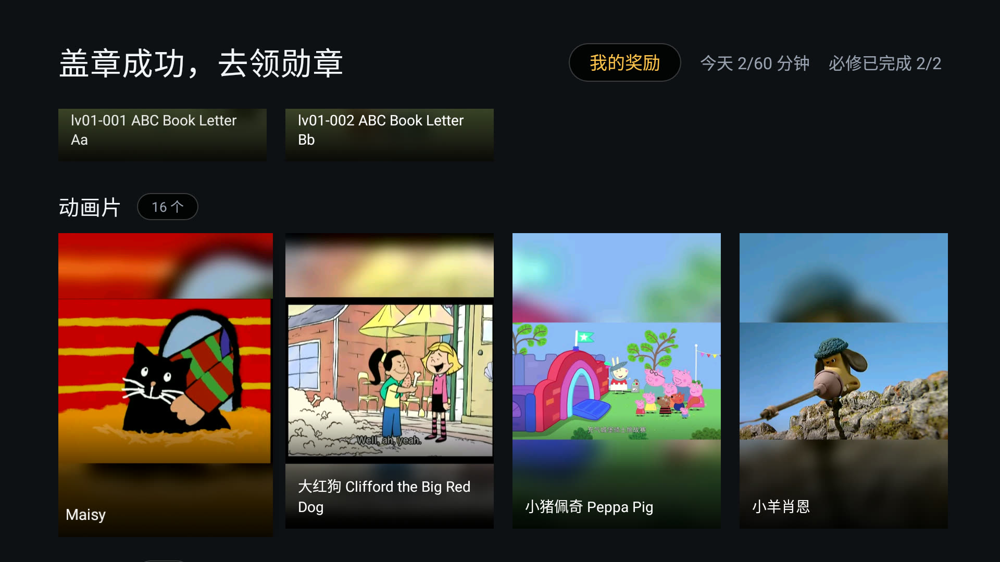
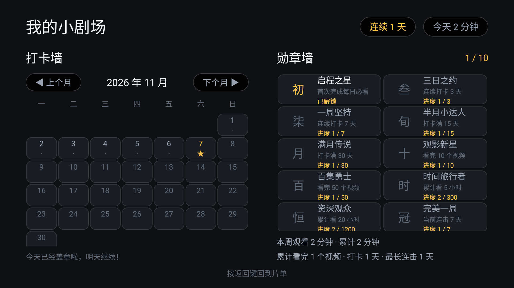
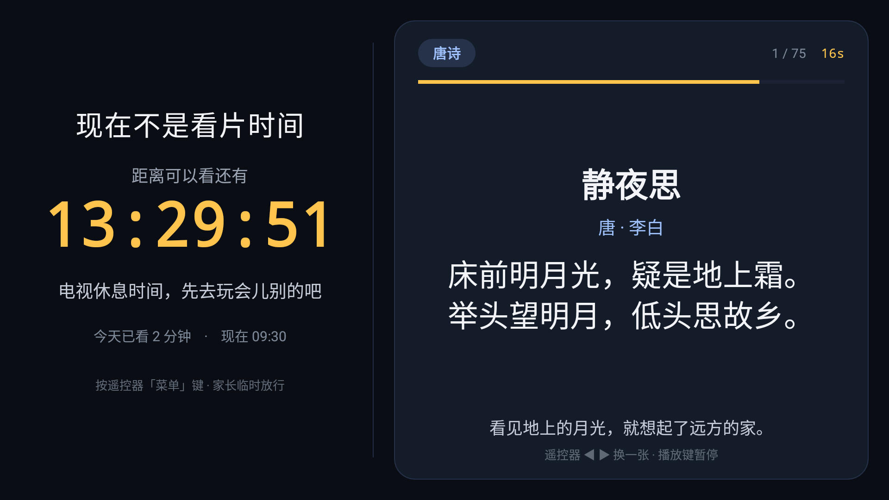

小剧场 使用说明书
适用版本：V1.0（2026-11-10） 适用设备：海信 55E3F-MAX（VIDAA / Android 9）+ 绿联 UGOS Pro NAS
这份说明书给谁看：家长。孩子不需要看，他只需要遥控器的方向键和 OK。
0. 一分钟速查
| 我想…… | 怎么做 |
|---|---|
| 给孩子加一部新动画 | 双击桌面「打开 tv.json 编辑器」→ 重新读取 → 添加条目 → 保存到 NAS |
| 换掉今天的必看 | 编辑器里改「今天要看的」分区的条目 → 保存 |
| 让孩子九点后不能看 | 电视：家长控制 → 时间与时长 → 周末/平日时段 |
| 每天最多看 1 小时 | 电视：家长控制 → 每日上限 → 60 |
| 我自己要看电视 | 遥控器菜单键 → PIN → 退出到桌面（30 分钟内不回弹） |
| 孩子被锁屏了，想再给 15 分钟 | 锁屏上直接按 PIN 四个数字 |
| 改完片单电视没反应 | 等 15 秒；还没有就菜单键 → 重新读取清单 |
| 封面是灰的 | 双击 tools/make-covers.bat，或编辑器里「选图」 |
| 视频全黑、连优酷也没画面 | 把电视电源拔掉再插上（不是只重启 App） |
| 忘了家长密码 | 见第 11.4 节（先试 1234） |
1. 小剧场是什么
一句话：电视上只出现你挑过的内容，孩子每天先看完你指定的几集，才能看动画片。
它和你用过的视频 App 有三点根本不同：
| 普通视频 App | 小剧场 |
|---|---|
| 首页推荐、自动连播、广告 | 只有你写进片单的内容，没有推荐流 |
| 内容在平台服务器上 | 视频就在你家 NAS 上，走局域网直读 |
| 你管不了「看多久、看什么」 | 时段、时长、必看门禁、儿童锁都由你定 |
它不会做的事，请先知道，免得误会：
- 不会联网刮削海报，也不会自动从视频里截封面。没配封面就是一张灰卡（第 7.6 节教你补）。
- 不会扫描全盘。NAS 里没写进
tv.json的视频，电视上永远看不到。 - 不是万能的“锁”。Home 键靠“设为默认桌面”解决，输入源/电源这类硬件键拦不住（第 8 节说明）。
2. 开始之前
2.1 你需要有
| 东西 | 说明 |
|---|---|
| 电视 | Android 电视即可（本项目实测海信 55E3F-MAX，Android 9） |
| NAS | 开启 SMB 服务（445 端口）；一个可写共享（本项目用 data） |
| 电脑 | Windows，用来改片单；手机浏览器也可以 |
| 网线 / WiFi | 电视和 NAS 在同一个局域网 |
2.2 三个关键位置（记住这三行就够）
视频文件： NAS 共享「儿童资源」下的任意目录（只读没关系）
片单文件： NAS 共享「data」→ curated/tv.json ← 唯一的“遥控器”
备份文件： NAS 共享「data」→ curated/tv.backup.json ← 每次保存自动生成
片单 = 一份 JSON 文件。你在电脑上改它，电视就跟着变，不需要重装 App、也不需要拿遥控器操作。
2.3 电视上的 App
| 项 | 值 |
|---|---|
| 名称 | 小剧场 |
| 包名 | com.family.curated |
| 安装包 | 项目根目录 小剧场.apk，或 app/build/outputs/apk/debug/app-debug.apk |
3. 第一次安装（三件事）
3.1 装 APK
方法一：用 adb（推荐，能顺带设默认桌面）
adb connect 192.168.31.147:5555
adb install -r 小剧场.apk
电视需要先打开「网络 ADB 调试」（开发者选项里）。adb 显示 offline 时：
adb disconnect 192.168.31.147:5555
adb connect 192.168.31.147:5555
方法二：U 盘：把 APK 拷到 U 盘，插电视，用电视自带的文件管理器安装（需允许“未知来源”）。
3.2 第一次打开，确认能读到片单
打开后应该看到海报墙。如果显示「请在 NAS 的共享文件夹里放一份清单」：
- 确认 NAS 上真的有
data/curated/tv.json； - 确认
tv.json里的nas段账号密码正确； - 确认 NAS 的 SMB 服务开着、445 端口通。
3.3 立刻做两件事（强烈建议）
- 改家长密码：主界面右上「家长控制」→ 输
1234→ 规则 → 家长密码 → 改成你自己的 4–8 位数字。 - 决定要不要开儿童锁：不做也能用，孩子按 Home 会回到别的桌面。要做见第 8 节。
4. 电视上都有什么
4.1 主界面（海报墙）

这张是较早的实拍，当前版本顶栏在「我的奖励」旁边还多了「家长控制」按钮。
顶栏从左到右：
| 元素 | 含义 |
|---|---|
| 「今天要看的」/ 鼓励语 | 完成必看后会变成「今天的都做完啦」之类 |
| 我的奖励 | 进打卡墙 + 勋章墙；有新勋章时显示「· N 枚新勋章」 |
| 家长控制 | 要 PIN；进设置页（改时段、上限、密码） |
| 今天 X/60 分钟 | 今日已看时长 / 上限；没设上限只显示已看 |
| 状态文字 | 例如「必修还剩 3 个」「必修已完成 5/5」 |
主体是一行行分区。每行标题右边显示这一行有几个条目。被锁住的分区，卡片上有锁标和「还差 N 个才解锁」。
4.2 剧集列表
点整季的卡片（如「汪汪队立大功」）进入，显示「共 85 个」，一集一行，看过的有进度条。上下选、OK 播放、返回回主界面。
如果显示「读取超时」，按一下 OK 重试即可，不需要重启 App。
4.3 播放页
| 按键 | 作用 |
|---|---|
| OK | 暂停 / 继续 |
| 左 / 右 | 快退 / 快进 15 秒 |
| 返回 | 退出播放（进度自动记住） |
- 下次进来从上次的位置继续。
- 必看分区的视频不能跳着看：系统记住你“真正连续看到的最远位置”，快进越界会被拉回并提示。看过的部分可以回看。
- 播放出错时屏幕会显示「正在自动重连 1/3」之类，多数情况自己会好；彻底失败会按错误类型提示，按 OK 可重试。
4.4 我的奖励（打卡墙 + 勋章墙）

- 打卡墙：每天必看全部完成，当天自动盖一个章。月份可翻页，右上角显示「连续 N 天」。
- 勋章墙：10 枚勋章，按累计打卡、连击、观看时长、视频数解锁。新解锁的勋章在主界面按钮上挂小红点。
- 遥控器「信息 / 指南」键可以从任何界面直接跳到这里。
4.5 锁屏与学习角
到了不可用时段，或今天的时长用完，会出现锁屏：

- 左边 42%：大大的倒计时，告诉你还有多久能看（隔几米也看得清）。
- 右边 58%：学习角，自动轮播唐诗、英语单词、名画、识字卡。
- 遥控器 ◀ ▶ 可以手动翻一张；
- 播放/暂停键可以暂停轮播；
- 每张停留 20 秒（可改）。
- 内置 255 张卡片，断网也能用：57 首唐诗、78 个单词（A–Z 每字母 3 个）、50 幅名画、70 张识字/成语/短句。
4.6 家长控制（电视上直接改设置）
主界面「家长控制」→ 输 PIN → 两列设置页。方向键选，OK 改，返回回片单。
| 分组 | 能改什么 |
|---|---|
| 时间与时长 | 每日上限（0/20/30/45/60/90/120/自定义）、平日时段、周末时段、时段限制开关 |
| 规则 | 家长密码（4–8 位）、看完判定（80%–100%）、应用入口 |
| 维护 | 临时放行、今天全部重来、清空播放进度、重新读取清单、退出到桌面 |
这里改的东西会写回 NAS 的 tv.json，所以电视和电脑上看到的永远是同一份配置。写入前会自动备份 tv.backup.json，写完会回读校验；NAS 写不进去会明确报错，不会“界面改了、下次又变回去”。
小提示：遥控器没有 TAB 键，输入框里输完直接按 OK 就是“确定”。
5. 遥控器速查
| 场景 | 按键 |
|---|---|
| 主界面选片 | 上/下选分区，左/右选卡片，OK 进入 |
| 播放 | OK 暂停，左/右 ±15 秒，返回退出 |
| 家长菜单 | 菜单键 → 输 PIN |
| 锁屏时临时放行 | 直接按 PIN 数字（不用先按菜单） |
| 锁屏时翻学习卡 | ◀ ▶（或 ▲ ▼ / OK） |
| 锁屏时暂停轮播 | 播放/暂停键 |
| 打卡墙 / 勋章墙 | 信息 / 指南键 |
6. 孩子的一天（正常流程长什么样）
- 17:30 打开电视，主界面第一行「今天要看的」有 5 集，下面「动画片」「纪录片」「学习」都带锁。
- 一集一集看完，右上角从「必修还剩 5 个」变成「必修已完成 5/5」。
- 完成后：今天盖章、可能解锁新勋章、下面三个分区解锁。
- 孩子去「动画片」挑一部，进入剧集列表选集。
- 20:30 或累计看满 60 分钟，画面切到锁屏：左边倒计时，右边开始放名画和唐诗。
- 想再看？只能等明天，或者家长来输 PIN 放行 15 分钟。
7. 家长日常操作
7.1 加一部新动画（最常用，6 步）
先确认：视频已经拷进 NAS 的「儿童资源」共享里（儿童资源/儿童视频/99.娱乐动画/新动画/...）。
- 电脑上双击桌面 「打开 tv.json 编辑器」（实际调用项目里的
start-tvjson-editor.bat），浏览器会打开127.0.0.1:8787。 - 点顶部 「重新读取」。这一步别省——先读一遍，才不会把别人刚改的内容覆盖掉。
- 找到「动画片」分区，点 「＋ 添加条目」。
- 类型选 folder（整季），点「浏览」逐层进入 NAS，选中剧集目录。
- 填标题（电视上显示的名字），副标题可选（如「26 集」）。
- 点 「保存到 NAS」。等 15 秒，电视上就出现了，不用碰遥控器。
加单集就选 file；想加一个别的 App 的入口就选 app。
编辑器顶部会显示当前清单，例如「192.168.31.72 · data:curated/tv.json · N 字节 · 4 分区 / 27 条目」。
7.2 调整顺序、换必看
- 在分区里用 上移 / 下移 调条目顺序（电视上就是这个顺序）。
- 分区顺序也是同理：分区的上下位置决定电视上第几行。
- 想让某个分区变成“每天必须先看”：在分区卡片上勾选 「每日必看 gate」（默认「今天要看的」已经勾上）。
- 想让「动画片」必须做完必看才能进：在它的分区卡片「解锁依赖 requires」里填
daily（即必看分区的key）。 - 想让某个分区每天自动换一批：分区卡片里填 「自动轮换 auto」，如
{"folder": "儿童视频/99.娱乐动画/Maisy", "count": 2}。 - 想完全取消门禁：把所有分区的
gate和requires删掉。
放心调顺序：条目的身份是按路径记的，不是按位置。上移下移不会让封面或观看进度错位。
7.3 设置“几点能看、能看多久”
推荐在电视上改（改完立刻生效，也会同步到 NAS）：
家长控制 → 时间与时长：
| 项 | 例子 | 说明 |
|---|---|---|
| 每日上限 | 60 | 只算真正播放的时间，暂停不算；0 = 不限 |
| 平日时段 | 17:30–20:30 | 周一至周五 |
| 周末时段 | 09:00–11:30、16:00–23:30 | 周末可以两段 |
| 时段限制 | 开 / 关 | 关掉就只看时长，不看时间 |
也可以在电脑上改 tv.json 的 schedule 段：
"schedule": {
"enabled": true,
"weekday": [["17:30", "20:30"]],
"weekend": [["09:00", "11:30"], ["16:00", "23:30"]],
"dailyLimitMinutes": 60,
"lockMessage": "电视休息时间，先去玩会儿别的吧"
}
规则：
- 结束时间比开始时间早 = 跨零点（如 "22:00-01:00"）。
- 不写 weekend = 周末跟平日一样；写 [] = 周末全天开放。
- enabled: false 或整段删掉 = 完全不限制。
7.4 改家长密码、看完判定
电视：家长控制 → 规则。
- 家长密码：4–8 位数字。默认
1234，一定要改。 - 看完判定：进度到多少算“看完”，默认 92%。孩子总差一点就卡住的，可以调到 85%；想更严格就 100%。
7.5 让某个 App 出现在电视上（可选）
比如允许孩子用「识字小游戏」或「优酷」：
- 电视：菜单键 → PIN → 「选择允许显示的应用」，OK 多选，保存。
- 主界面最后会多一行「应用」，点开临时放行，到时间/按 Home/按返回就回小剧场。
- 想让它“做完必看才出现”：
apps.showAfterDaily保持true（默认），没做完时卡片显示「还差 N 个才解锁」。
也可以在编辑器「应用入口」卡片里改，点「从电视读取并勾选」能看到电视上装了什么。
注意：家长在电视上勾选的结果优先于网页里的列表。网页改完看不到时，去电视菜单点一次「恢复清单里的应用列表」。
新版 App 在网页改动apps段后会自动清掉本地勾选，通常不需要手动点。
7.6 换 / 补封面
App 只认 NAS 上现成的图片，不会自己截图。三条路，按省事程度排：
- 一键截帧（推荐）：双击
tools/make-covers.bat（等价于python tools/make_covers.py --from-nas --apply）。
它会为每个没封面的条目找一个视频，在 20% / 45% 处截一帧，拼成竖版海报，上传到data/curated/covers/，再写回清单。
- 只处理没有封面的条目；想全部重做加--force。
- 重复跑不会堆垃圾文件（文件名按路径 hash 固定）。 - 用现成图片：把图放进视频目录，命名成和视频同名
.jpg，或目录里放folder.jpg/poster.jpg/cover.jpg/封面.jpg。 - 手动指：编辑器条目行的封面框里点「选图」，在 NAS 上点一张，自动写成
共享名:路径。
视频共享是只读的也没关系：封面统一放可写的
data共享，写法是"cover": "data:curated/covers/xxx.jpg"。
7.7 学习角怎么换内容
在编辑器的「高级字段」里改（learning 段整体是一个 JSON），或者用网页控制台「等待学习角」页（有可视化表单）：
| 想做的事 | 怎么改 |
|---|---|
| 只让孩子先学第一批 | stage: 1、stageSize: 50（每类前 50 张，一轮约 200 张） |
| 熟悉后进下一批 | 把 stage 改成 2 |
| 不想分阶段 | 两项都改回 0（255 张全上） |
| 只出单词 | order: ["word"]（写几类就只出几类） |
| 每张停久一点 | intervalSeconds: 30（6–600 秒） |
| 换成家庭相册 / 孩子画作 | artFolder: "curated/art"、artShare: "data"，把图片放进 NAS 这个目录 |
| 加自己的卡片 | 网页控制台「等待学习角」页底部「自定义卡片」，按唐诗/单词/名画/识字四类添加 |
7.8 完全不想限制
把 schedule 整段删掉，或设 "enabled": false。锁屏和学习角都不会再出现，门禁（gate / requires）也删掉后就是纯点播。
8. 儿童锁：不让孩子退回桌面
8.1 先理解一件事
Android 的 Home 键由系统独占，App 收不到也拦不住。所以“不让孩子出去”必须分三层做，只改 App 一定被绕过：
| 层 | 挡住什么 | 怎么做 |
|---|---|---|
| ① 应用内 | 返回键、设置/输入源/最近任务等能收到的功能键 | 片单里 kiosk.enabled: true |
| ② 默认桌面 | Home 键 | 一条 adb 命令（见下） |
| ③ 前台守卫 | 被切到后台 | App 自带，约 1 秒拉回 |
| ④ 硬件键 | 输入源 / 直播 / 电源 | 拦不住：贴住按键，或换简易遥控器 |
8.2 开启
第 1 步：编辑器「高级字段」里给 kiosk 打开（或直接编辑 JSON）：
"kiosk": {
"enabled": true,
"exitComponent": "com.jamdeo.tv.vod/com.ju.main.launcher.LauncherActivity",
"exitMinutes": 30,
"reentryMs": 1000,
"blockBack": true,
"blockSystemKeys": true
}
保存到 NAS。exitComponent 是家长“退出到桌面”时打开的那个桌面（上面这个是海信原生桌面）。
第 2 步：电脑上执行（只需一次）：
adb shell cmd package set-home-activity --user 0 com.family.curated/.MainActivity
adb shell cmd package resolve-activity --brief -a android.intent.action.MAIN -c android.intent.category.HOME
第二条命令应该直接返回 com.family.curated/.MainActivity。如果返回 ResolverActivity，说明没写死，再执行一次第一条。
第 3 步（如果装过 Aerial 桌面）：Aerial 会不断把自己抢回桌面，必须停用它（可逆）：
adb shell cmd package disable-user --user 0 app.orchard.tv
撤销：
adb shell cmd package enable --user 0 app.orchard.tv
adb shell cmd package set-home-activity --user 0 app.orchard.tv/.MainActivity
8.3 家长怎么出去、怎么回来
- 出去：菜单键 → PIN → 「退出到桌面」。默认放行 30 分钟（
exitMinutes），期间不会被拉回。 - 回来：放行到期自动恢复；也可以回小剧场后菜单键 → 「结束家长放行（恢复儿童锁）」提前恢复。
8.4 已知限制（不是坏了）
- 海信 VIDAA 开机不通知第三方 App：开机后会停在海信原生桌面，按一次 Home 就进小剧场，之后再也出不去。这是固件限制。
- 输入源 / 直播 / 电源键属于硬件层，应用收不到。最省事的办法是把这几个键贴住，或换一把只有方向键 + OK + 返回的遥控器。
- 不要为了“开机直达”去给小剧场授无障碍 + 悬浮窗 + 写系统设置权限，权限面太大，且会和其它守护互相抢前台。
9. 出门在外也想改片单（可选）
前提：控制台已经常驻在 NAS 上（docker compose up -d，或导入 dist/kidtv-console-ugospro.zip）。电视完全不用动。
| 方案 | 怎么打开 | 安全性 | 适合 |
|---|---|---|---|
| A. Tailscale（推荐） | 手机连 Tailscale，浏览器开 http://<NAS 的 100.x 地址>:8765/ |
不开放任何公网端口 | 自己手机改 |
| B. UGREENlink | 外网登录绿联账号 → 桌面点「控制台」快捷方式 | 绿联账号 + HTTPS + 访问码 | 最省事 |
| C. Cloudflare Tunnel | 自己的域名 + 邮箱验证码 | HTTPS + 二次认证 | 有域名 |
| D. 绿联云 App | 文件管理里直接编辑 data/curated/tv.json |
安全但容易写错 JSON | 应急 |
红线：不要把 8765 映射到公网，不要用 DDNS 裸奔，不要把网址发群里。
这个页面能读到 NAS 的明文账号密码、能改家长 PIN 和整份片单。
10. 常见问题
| 现象 | 先查这里 | 处理 |
|---|---|---|
| 改完片单，电视没变 | 是不是没保存成功 | 等 15 秒；编辑器看「已保存到 NAS」；再不行菜单键 → 重新读取清单 |
| 海报全是灰的、只有标题首字 | 正常现象，不是加载失败 | 跑一次 tools/make-covers.bat，或在编辑器里「选图」 |
| 卡片有图，但图不对 | 封面路径写错 | 编辑器里看缩略图预览，重新「选图」 |
| 点整季提示「这个文件夹里没有视频」 | 目录层数 / 扩展名 | 目录不要超过 3 层；确认是 mp4/mkv 等视频文件（mp3 不进列表） |
| 播不了，提示「格式不支持」 | 多半是首次读 SMB 抖动 | 等它自动重连；不行按 OK 重试；反复失败再看错误码（2xxx NAS / 3xxx 文件头 / 4xxx 解码器） |
| 剧集页一直「正在读取…」 | SMB 连接卡住 | 退出 App 重进；仍不行断电重启电视 |
| 所有视频全黑，优酷也没画面 | 电视解码链路卡死 | 拔电源重启电视，只重启 App 没用（见 11.1） |
| 锁屏一直不出来 / 一直锁着 | 时段设置 | 家长控制里看「时段限制」和当天时间窗；跨零点写法对不对 |
| 忘了 PIN | 默认 1234 |
试 1234；不行看 11.4 |
| 保存时报错 | NAS 是否可写、磁盘满没满、账号权限 | 换 data 共享试试；看编辑器提示的具体错误 |
| 连不上 NAS | 445、账号、共享名、IP | 电视和 NAS 是否同网段；NAS 的 SMB 服务是否开着 |
| 开机停在海信桌面 | 固件不派发开机广播 | 按一次 Home，这是已知限制 |
| 孩子进了别的 App | 是否在允许列表里 | 菜单 → PIN → 选择允许显示的应用，取消勾选 |
| 学习角不自动换 | 是不是按了暂停 | 再按一次播放键；或看 intervalSeconds 是否很大 |
| 时间窗里孩子还能看 | 家长放行没结束 | 菜单 → 结束家长放行 |
| 电视存储不足装不上 | /data 剩余空间 | adb shell pm trim-caches 999G 清缓存；删不用的 App |
11. 出问题了怎么救
11.1 所有视频黑屏 / 一直缓冲（连优酷都没画面）
这是电视系统级解码链路卡住，不是 App 也不是片单的问题。
判断依据：小剧场和优酷同时“有声音没画面/一直转圈”；NAS 能 ping 通，SMB 也连着。
处理：把电视电源拔掉，等 10 秒再插上（待机不够，要断电）。开机后按一次 Home 进小剧场，再试播放。
为什么会这样：曾在电视上跑 scrcpy 远程看画面，把分辨率/帧率调高做软编压测，触发硬编崩溃后，MTK9652 的共享视频链路被卡死。以后不要提高 scrcpy 的分辨率或帧率做压测，也绝不要把 5555 端口映射到公网。
11.2 剧集页永远「正在读取…」/ 点播放没反应
- 退出 App 再进（用遥控器返回回主界面，或
adb shell am force-stop com.family.curated后重开）。 - 仍然不行：断电重启电视。
- 只在“刚保存完片单”时出现：等 2 分钟，或在电脑上重新保存一次（新版已修，长时间不恢复说明是旧 APK）。
11.3 电视连不上 NAS
按顺序查：
- 电视和 NAS 是不是同一个网段（如都是
192.168.31.x）。 - NAS 的 SMB 服务是否开启、445 是否可达。
tv.json里的nas.host / user / password / share是否和现在一致。- 电视是否在用旧缓存（顶栏会有离线提示）。改完清单后菜单 → 重新读取清单。
11.4 忘了家长密码 / 密码被写坏
- 先试默认
1234。 - 忘了但能进电脑：打开编辑器，在「全局设置」里找到「家长 PIN」（或切到 JSON 原文看
pin），改成新的再保存。 - 密码位被写成一串星号、导致电视连不上 NAS（历史上发生过）：需要把 NAS 上
data/curated/tv.json的nas.password改回真实密码。 - 简单办法：绿联云 App → 文件管理 → 编辑
data/curated/tv.json； - 或者用上一份
tv.backup.json覆盖回去。 - 电视端缓存的密码可以重装 App（
adb install -r不会清数据；要清就adb shell pm clear com.family.curated，但这会清掉打卡与进度，慎用）。
记住一个原则：密码框里看到是星号或空白时，不要去动它。编辑器和电视端都会把“空 / 全星号 /
__KEEP_NAS_PASSWORD__”当成“沿用原密码”。
11.5 改错了，想退回上一版片单
NAS 上同目录有 tv.backup.json，那是上一次保存前的版本：
- 绿联云文件管理里，把
tv.backup.json复制一份、改名成tv.json覆盖； - 电视菜单 → 重新读取清单。
编辑器本机还留了更早的历史：curated-tv/.tmp/tvjson-backups/tv.YYYYMMDD-HHMMSS.json。
11.6 想彻底重来
adb shell pm clear com.family.curated # 清掉本机进度、打卡、勾选（不可恢复）
adb install -r 小剧场.apk # 重装
NAS 上的 tv.json 不受影响。
12. 安全与保养
- 改掉默认 PIN
1234，也不要设成孩子知道的生日。 tv.json里有 NAS 明文账号密码，不要发微信、不要传网盘、不要提交到 Git。- 控制台默认只在本机
127.0.0.1；开手机访问后要访问码。不要把 8765 映射到公网。 - 不要把 ADB 的 5555 暴露到公网（ADB 没有认证，等于把电视交出去）。
- 用 scrcpy 看画面只用这套参数，不要提高分辨率/帧率：
--no-audio --video-codec=h264 --video-encoder=OMX.google.h264.encoder
--max-size=960 --max-fps=15 -b 2M
- 电视只有 2.5 GB 内存，
/data曾经只剩 800 多 MB，别装太多用不上的 App。 - 每次保存片单都会自动备份；重要改动（比如大改分区）前，可以自己再下载一份 JSON 存电脑。
- 建议在路由器上给电视和 NAS 做 DHCP 保留，避免换 IP 后要重新配置。
13. 附录
13.1 一份最小可用的 tv.json
{
"nas": { "host": "192.168.31.72", "port": 445, "user": "你的账号", "password": "你的密码", "share": "儿童资源" },
"playlistShare": "data",
"pin": "1234",
"passRatio": 0.92,
"schedule": {
"enabled": true,
"weekday": [["17:30", "20:30"]],
"weekend": [["09:00", "11:30"], ["16:00", "23:30"]],
"dailyLimitMinutes": 60
},
"sections": [
{
"key": "daily", "title": "今天要看的", "gate": true,
"items": [
{ "title": "识字 第3课", "file": "儿童视频/01.学习类视频/识字/03.mp4" }
]
},
{
"key": "cartoons", "title": "动画片", "requires": "daily",
"items": [
{ "title": "汪汪队立大功", "subtitle": "85 集", "folder": "儿童视频/99.娱乐动画/汪汪队立大功 PAW Patrol" }
]
}
]
}
放在 NAS 的 data/curated/tv.json，电视按菜单 → 「重新读取清单」即可。
13.2 常用字段速查
| 字段 | 写在哪 | 作用 |
|---|---|---|
pin |
顶层 | 家长密码（4–8 位） |
passRatio |
顶层 | 看完比例，0.92 = 92% |
gate: true |
分区 | 这是每日必看 |
requires: "daily" |
分区 | 必看没做完就锁着 |
file |
条目 | 单个视频文件 |
folder |
条目 | 整个剧集目录（递归 3 层） |
app |
条目 | 一个应用的入口 |
cover |
条目 | 封面路径；data:curated/xxx.jpg 表示去 data 共享读 |
subtitle |
条目 | 卡片副标题（如「26 集」） |
schedule.weekday/weekend |
顶层 | 可用时间窗 |
schedule.dailyLimitMinutes |
顶层 | 每日分钟上限，0 = 不限 |
learning.stage/stageSize |
顶层 | 学习角分阶段 |
apps.showAfterDaily |
顶层 | 应用入口是否要等必看完成 |
kiosk.enabled |
顶层 | 儿童锁总开关 |
autoRefresh.intervalSeconds |
顶层 | 自动刷新间隔，默认 15 秒 |
13.3 文件都放在哪
| 东西 | 位置 |
|---|---|
| 电视 App | 包名 com.family.curated |
| 片单 | NAS data/curated/tv.json |
| 片单备份 | NAS data/curated/tv.backup.json |
| 封面图 | NAS data/curated/covers/ |
| 视频 | NAS 儿童资源/儿童视频/... |
| 简易编辑器 | curated-tv/start-tvjson-editor.bat（桌面有快捷方式） |
| 网页控制台 | curated-tv/tools/console.py（8765） |
| PC 桌面助手 | curated-tv/KidTvConfig-PC.bat 或 dist/KidTvConfig-PC.exe |
| 编辑器本机备份 | curated-tv/.tmp/tvjson-backups/ |
| 安装包 | 小剧场.apk / app/build/outputs/apk/debug/app-debug.apk |
13.4 术语
| 词 | 意思 |
|---|---|
| 分区 | 电视上的一行，比如「今天要看的」 |
| 条目 | 一张海报卡：单集、整季或一个 App |
| 必看 / 门禁 | 每天必须先完成的分区；没做完，别的分区锁着 |
| 放行 | 家长临时解除时间限制（15 分钟）或儿童锁（30 分钟） |
| 学习角 | 锁屏右半边轮播的唐诗/单词/名画/识字卡 |
| frontier | 必看视频“真正连续看到的最远位置”，防跳看用 |
需要更细的字段说明？ 看 docs/CONFIG.md。
想改代码或重新编译？ 看 README.md 的「部署」章节（需要 JDK 17 + Android SDK 34）。